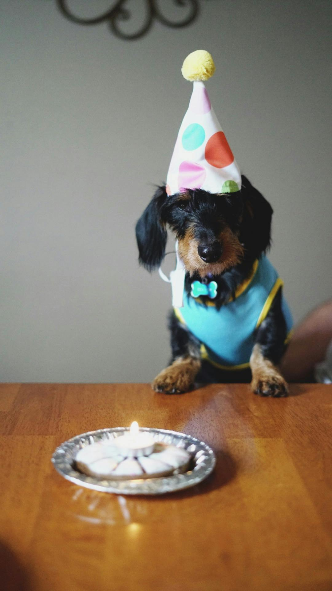

¡Bienvenidos a Casa!
Un hogar temporal lleno de amor para perros y gatos sin hogar.
Sobre Nosotros
Nuestra Historia comienza con...
La idea de crear esta fundación de una realidad que, aunque dolorosa, se ha vuelto cotidiana: perros y gatos abandonados, olvidados, tratados como objetos prescindibles en una sociedad que muchas veces ha perdido la sensibilidad y los valores más básicos. Un día, simplemente no pudimos mirar hacia otro lado. Ver a esos ángeles de cuatro patitas, con hambre, con miedo, sin hogar, nos hizo entender que no basta con lamentarse: había que actuar. Así nació esta fundación —como un grito silencioso por ellos, los que no pueden hablar, pero sí sienten. Porque sí, los animales son seres sintientes. Y merecen una vida digna, llena de amor, respeto y cuidado. Nuestra misión es clara: ser ese puente entre el que da en adopción y el que recibe con amor, ser refugio, ser voz, ser ejemplo. Queremos demostrar que sí se puede cambiar la historia de un animal, una adopción a la vez. Que ser animalista no es una moda, es una forma de vida, de respeto, de empatía. No estamos aquí para competir, estamos aquí para inspirar. Para que más personas se sumen, adopten, esterilicen, cuiden y amen. Porque un mundo que respeta a los animales es un mundo más humano.
Valores Nuestros
¡Adóptame!
Firulais
Un perrito cariñoso en busca de un hogar.
Rocky
Un perrito cariñoso en busca de Amor.

Mishi
Una gatita juguetona esperando una familia.